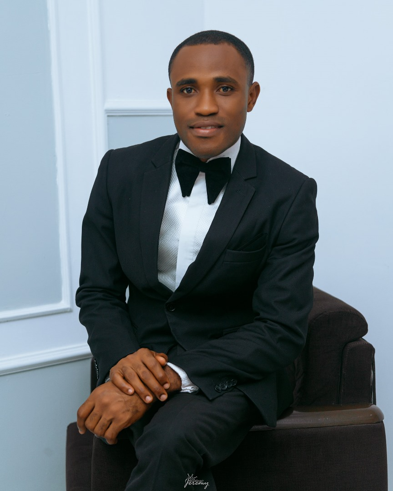

ELIJAH ONUCHE IGBADI
Abuja - Nigeria.

OBJECTIVE
I am a web developer with DigitAfric Ltd looking to leverage technical expertise in web development, collaborating with cross functional teams to drive innovative solutions and deliver high-quality digital experince.
EDUCATION
- Rework Academy
Full Stack Development - 2024
- Federal Polytechnic Kaura Namoda
Computer Science - 2012
- St. Patrick's Secondary School - 2008
WORK EXPIRIENCE
- SA To The President FOCUS AFRICA SERIES, on Conferences and Events
- Executive Virtual Assistant To The Executive Director, Inspiring Youth Africa Magazine
- Executive Virtual Assistant To The Executive Director, Rest Logic Nigeria Ltd.
- Project Secreatary, IAASAN
- Supervisory Team Member, ACE CHARITY
SKILLS
- Graphics Design
- Web Development
- Vocie Over
- Compare
- Script Writing
AWARDS, CERTIFICATION AND OTHER ACHIEVEMENTS
- Certificate In Web Development
- Certificate In Graphics Design Using Corel Draw and Photoshop
- JobberMan Soft Skill Certificate
My Hobbies
Contact Me